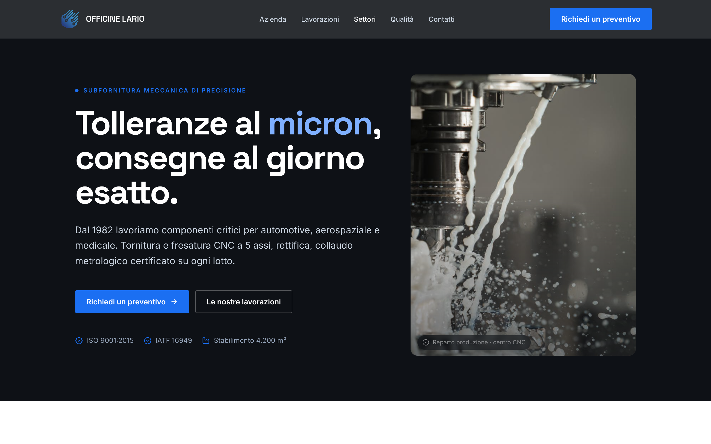

Proposta di design · Presentazione
Un prototipo navigabile, non un'immagine. Lo percorriamo insieme: struttura, contenuti, identità. Da approvare prima di costruirlo.
Cliente
Officine Lario S.r.l.
Archetipo
Corporate · vetrina B2B
Build
WordPress · Impreza
Da dove siamo partiti
Obiettivo
Generare richieste di preventivo qualificate da uffici acquisti.
Pubblico
Buyer e uffici tecnici B2B, automotive e aerospaziale.
Successo
Più disegni tecnici ricevuti, ciclo di contatto più corto.
Azione primaria del sito: “Richiedi un preventivo / Caricate il disegno”. Tutto il percorso porta lì.
Architettura del sito
Home
Home
hero · numeri · lavorazioni · settori · qualità · CTA
Azienda
storia, numeri, stabilimento
Lavorazioni
4 reparti, una pagina ciascuno (SEO)
Settori
automotive, aerospace, medicale, oleodinamica
Qualità
certificazioni, collaudo
Contatti
form preventivo + upload disegno
Ogni lavorazione ha la sua pagina per posizionarsi su ricerche specifiche (“tornitura CNC conto terzi”). Ogni pagina ha una sola chiamata all'azione, sempre la stessa.
Direzione visiva
Palette
Grafite industriale + un solo accent blu. Il blu dice precisione e fiducia, non moda. Nessun arancio: questo non è un sito Lavder, è il sito di Officine Lario.
Tipografia
Space Grotesk
Display · titoli, numeri
Inter
Testo · UI, paragrafi
Direzione creata da Lavder in fase di discovery (il cliente non aveva un'identità digitale definita). Da validare con voi.
Il prototipo · Home
Apribile dal vivo su desktop e mobile. Qui la home in cornice.

Perché così
Mood tech industriale. Scuro, sobrio, tecnico: parla la lingua di chi compra lavorazioni meccaniche.
Numeri in primo piano. 42 anni, ±2µm, 98,6% puntualità: la credibilità B2B passa dai dati.
Un solo accent, una sola CTA. Il blu segna sempre e solo l'azione. Niente rumore.
Qualità come prova. Le certificazioni hanno una sezione dedicata: per questo settore valgono oro.
Accessibilità e velocità nel design. Contrasto AA, focus visibili, animazioni rispettose: non un ritocco finale.
Come procediamo
1
Revisioni
Due round inclusi su questo prototipo. Feedback consolidato per round.
2
Approvazione
La firma del design sblocca lo sviluppo e il SAL di staging.
3
Sviluppo
Build su WordPress + Impreza, fedele al prototipo approvato.
Grazie.
Restiamo a disposizione per la revisione.